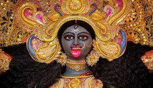

KALI PUJA

Here are 10 important points about Kali Puja:
- Kali Puja worships Goddess Kali, symbolizing destruction of evil, time, power, and motherly protection.
- It is celebrated on the new moon night, especially in West Bengal and eastern India.
- Homes and pandals are decorated with lights, diyas, and colorful designs.
- Devotees offer flowers, sweets, and prayers to seek strength and protection.
- The festival coincides with Diwali, spreading devotion, light, and spiritual energy.